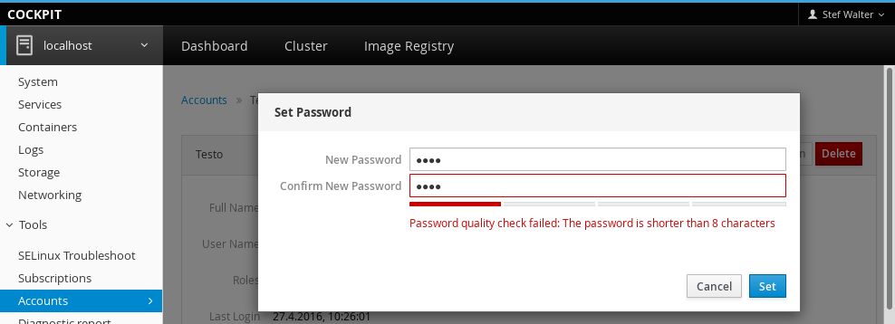

Cockpit is the modern Linux admin interface. There’s a new release every week. Here are the highlights from this weeks 0.114 release.
Test every change on CentOS
Cockpit runs all its tests suites against code before that code is merged, much less becomes part of a release. This isn’t just unit tests, but integration booting of RHEL, Debian, Fedora and Atomic machines.
We now added CentOS to that list. We now boot CentOS 7.x instances many hundreds of times a day to test aspects of the system, and how Cockpit and a given pull request interact with it.
Show SSH host keys and machine ID
The main system info page now shows the local machine ID for easy access.
You can also see the fingerprints of all the SSH host keys.
These are the fingerprints that you would be expected to recognize and/or add to the
known_hosts file when accessing the machine over SSH.

Allow changing the ethernet MTU
You can now change the ethernet maximum transmission unit in the network configuration.
Show intelligent password error messages
When choosing a password Cockpit validates the password using the pwscore tool.
Appropriate and descriptive error messages are now shown when the validation fails:

Red Hat subscription registration options
The Red Hat subscriptions functionality has been enhanced. You can now specify an activation key when registering the system. This key is generated in your organization in such a way that it uniquely identifies whan kind of software should be available on the system.
You can now also specify an organization when registering the system.
From the Future
Marek is working on a new part of the admin interface to list the virtual machines running on the current system. This is the beginnings of a web accessible virt-manager tool:

Try it out
Cockpit 0.114 is available now: